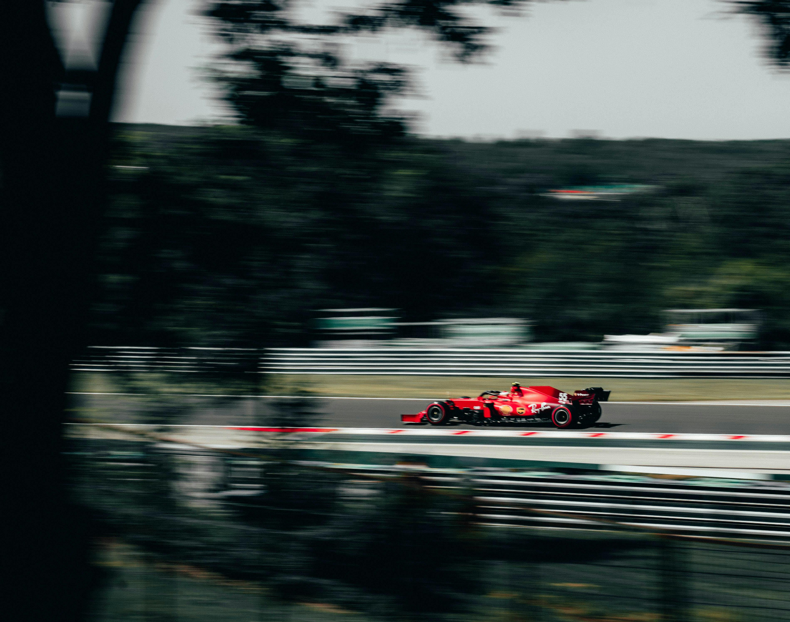

−10% seguido de +10%. Média aritmética = 0. O portfólio chegou abaixo do ponto de partida.
O drag é silencioso, permanente e cresce quadraticamente com σ. Em horizontes longos, ignorar esse custo equivale a superestimar sistematicamente o retorno composto.